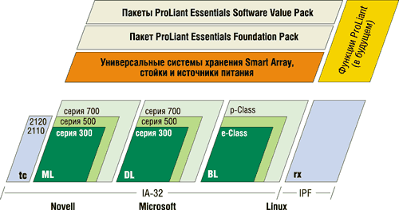
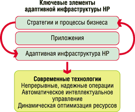

Олег Спиряев
В конце прошлого года корпорация HP (http://www.hp.com) объявила о своих стратегических задачах на рынке корпоративных компьютерных систем. По предварительным итогам 2003 г. (согласно данным IDC), НР занимает ведущие позиции на российском ИТ-рынке, лидируя в сегментах систем хранения данных, серверов архитектуры х86 и RISC. По словам генерального директора НР в странах СНГ Хилмара Лоренца, лидерство корпорации в ряде сегментов ИТ-рынка стало результатом воплощения последовательной стратегии и отличной работы российской команды.
Однако рынок не позволяет останавливаться на достигнутом. Если в 90-х годах перед индустрией стояла задача обеспечить эффективную информационную поддержку бизнеса, то сейчас на первый план выходят задачи оперативной его перестройки в соответствии с требованиями рынка. Сегодня более 90% простоев информационной системы (ИС) имеют своей причиной внешние неконтролируемые воздействия, и одной из основных задач представляется снижение рисков воздействия непредвиденных обстоятельств на бизнес. Согласно опубликованной информации, стратегия HP в 2004 г. будет ориентирована на решение четырех стратегических задач:
- укрепление позиций HP как поставщика решений для корпоративного рынка России;
- расширение спектра продуктов HP на российском рынке;
- обеспечение присутствия в регионах и разработка специализированных региональных программ;
- укрепление и расширение партнерской сети.
В частности, решение первой задачи предполагает, что политика компании будет следовать таким стратегическим направлениям, как продвижение в России концепции адаптивного предприятия, специализация по вертикальным рынкам, создание центров экспертизы по технологиям HP, привлечение консалтингового подразделения, продвижение на российский рынок таких технологий, как Itanium и UDC (Utility Data Center), инвестиции в развивающиеся сегменты рынка.
Действительно, одна из наиболее важных характеристик современного бизнеса - готовность к постоянным изменениям, а информационные технологии стали одним из ключевых компонентов успешной работы современной компании. Когда происходят изменения в бизнесе, ИТ также должны быть готовы поддержать их и обеспечить предприятие необходимой инфраструктурой.
Естественная реакция корпоративных заказчиков, стремящихся в условиях экономического спада сохранить прибыльность своего бизнеса, - в первую очередь сокращение расходов. Как следствие, многие компании корректируют подход к обновлению и развитию информационной структуры, отдавая предпочтение продукции и решениям тех поставщиков, которые обеспечивают сокращение расходов на обслуживание систем и продление их жизненного цикла. Прежде всего это касается серверных решений и систем хранения данных как наиболее дорогостоящих компонентов ИТ-инфраструктуры. Традиционный путь простого наращивания количества серверов и систем хранения данных, создания все более разветвленных сетей передачи данных не приводит к желаемому результату. Дело в том, что с ростом числа компонентов в системе возрастают сложность и объем работ по их обслуживанию, увеличивается штат системных администраторов, неадекватно растут издержки на содержание всей информационной инфраструктуры. Именно потому ИТ-инфраструктура должна уметь изменяться и приспосабливаться к переменчивым условиям бизнеса - вот основной вывод, к которому пришли в свое время специалисты компании Compaq в результате анализа запросов своих заказчиков. Чтобы обеспечить своим клиентам возможности для развития информационных систем и гибкого реагирования на изменяющуюся потребность в обработке данных, они разработали концепцию так называемой адаптивной инфраструктуры для нужд ИТ-бизнеса (Adaptive Infrastructure Strategy for IT Business Needs, AIS).
Базовые принципы AIS
Вообще говоря, информационная инфраструктура - не что иное, как одна из составляющих общей адаптивной инфраструктуры, и она должна эволюционировать, следуя за изменениями этой структуры более высокого уровня.
В основу концепции AIS разработчиками были положены следующие принципы. Во-первых, внедряемые средства обработки информации должны позволять быстро и гибко наращивать, изменять и перераспределять ресурсы ИС в зависимости от возникающих у заказчика потребностей; иными словами, системы должны "научиться приспосабливаться" к текущим запросам клиентов.
Во-вторых, новые информационные технологии должны обеспечивать более высокую скорость обработки данных, лучшую эффективность использования ресурсов ИС и снижение затрат на инфраструктуру.
И наконец, производители должны обеспечить масштабируемость предлагаемых ими технологий и средств обработки данных, приспосабливая их к бизнесу компаний любого размера, и гарантировать качество их обслуживания.
В качестве основополагающих компонентов своей концепции специалисты Compaq планировали развивать четыре взаимосвязанные технологии, совместное использование которых и дало бы возможность создать адаптивную инфраструктуру.
Virtual Presence and Control - виртуальное присутствие и управление инфраструктурой, подразумевающее защищенный доступ администраторов к ресурсам системы и управление ими из любой точки в любое время, что позволило бы сократить расходы на обслуживание ИС и ускорило решение возникающих проблем. За счет этого решения инфраструктура могла бы стать постоянно доступной администраторам для управления, а пользователям - для запросов на обработку данных. Так, в серверах ProLiant для удаленного управления применялась плата Remote Insight Lights-Out Edition, которая отвечала за доступ через любой браузер посредством Compaq Insight Manager. Информацией о функционировании сервера, которую она поставляла, мог воспользоваться системный администратор или удаленная сервисная служба Compaq Proactive Remote Service (CPRS). Она могла быть интегрирована в такие системы управления, как BMC Control, HP OpenView и им подобные.
Automated System Provisioning - автоматическое развертывание систем, т. е. совокупность технологий, позволяющих полностью автоматизировать длительные и ресурсоемкие процедуры внедрения, установки и обновления ПО и внесения изменений в процессы обработки данных, что позволило бы дополнительно сократить временные, людские и финансовые затраты на обслуживание ИС, упростить внедрение новых решений. Развивая это направление, специалисты предполагали создать автоматизированный инструментарий, подобный Rapid Development Pack, позволяющий проектировать систему из готовых процессорных модулей и модулей хранения, получая в конечном счете список необходимых компонентов и цены на них. Так, Resourse Partitioning Manager позволил бы гибко перемещать ресурсы в зависимости от изменяющихся условий эксплуатации.
Dynamic Recourse Scaling - динамическое масштабирование ресурсов систем в реальном времени позволяло бы персоналу ИТ-отделов включать и перераспределять системные ресурсы в зависимости от текущих потребностей бизнеса заказчика. Так, планировалось, что комбинация инструментов Dynamic Internet Solution Architecture и Recourse Partitioning Manager позволит создавать виртуальные устройства, скажем, виртуальный сервер с нужным числом процессоров из нескольких серверов или диск со "скоростью вращения" 20 тыс. об./мин из двух дисков, каждый из которых вращается со скоростью 10 тыс. об./мин.
Intelligent Fault Resilience - интеллектуальная обработка отказов, т. е. создание таких технологий и программно-аппаратных средств, которые обеспечивали бы превентивное выявление потенциальных отказов и реагировали на возникновение внезапных отказов, что, несомненно, повысило бы уровень готовности и доступности ресурсов ИС, снизило время простоев и сократило себестоимость обработки данных.
Параллельно шло формирование новой структуры услуг и сервисов, за счет которых заказчики смогли бы полнее реализовать преимущества адаптивной инфраструктуры. Эти услуги и сервисы планировалось предоставлять через сервисное подразделение Compaq Global Services и партнеров корпорации. Предполагалось, что в списке новых услуг появится Remote Services, благодаря которой заказчикам не придется самим следить за работоспособностью и исправностью компонентов инфраструктуры - эту обязанность взял бы на себя выделенный специалист от Compaq или сервисного партнера. Другим видом новых услуг должен был стать сервис Capacity on Demand, позволяющий заказчику сразу приобретать продукты (серверы, системы хранения, ПО), ресурсы которых соответствуют его потребностям на перспективу, а оплачивать их по мере подключения и использования.
Специалисты Compaq видели в адаптивной инфраструктуре эволюцию архитектуры виртуальных центров обработки данных, которая станет гибкой, всеобъемлющей, экономически эффективной, универсально управляемой и доступной для компаний любого масштаба.
Напомним, что вместе с появлением центров обработки данных обрела жизнь многоуровневая серверная модель. Собственно, преимущества централизации в рамках предприятия были и так очевидны, но в последние годы ресурсы стали разнообразнее, а управление ими - на порядки сложнее. В упомянутой модели выделялись, как минимум, три уровня серверов: фронтальный (front-end), промежуточный (middle tier) и внутренний (back-end). В итоге место одного консолидированного сервера заняла некоторая, пусть еще несовершенная инфраструктура, в которой консолидировались среди прочего значительное число серверов (чаще всего недорогих и стандартных) и системы хранения данных. Создание подобной инфраструктуры требует немалых инвестиций. Следовательно, чтобы компания не потеряла эти инвестиции, инфраструктура должна быть способна адаптироваться к внешним условиям.
В основу программы адаптивной инфраструктуры были положены унифицированные промышленные стандарты не только для аппаратного и программного обеспечения, но и для связующих элементов систем, что должно было стать ключевым фактором для снижения суммарных ИТ-затрат, внедрения ценных инноваций и успешной адаптации к конкретным нуждам клиентов. Другой ключевой атрибут, масштабируемость, открывал преимущества технологий, лежащих в основе концепции адаптивной инфраструктуры, компаниям всех рангов: как работающим с небольшими объемами информации, так и пользователям крупнейших центров обработки данных. В конечном счете, будучи интегрированной с конкретными решениями и службами, адаптивная инфраструктура существенно расширяла способности бизнеса приспосабливаться к переменам, экономно тратить ресурсы и чутко реагировать на запросы клиентов.
В частности, концепция адаптивной инфраструктуры требовала привлечения наиболее современных технологий в области ПО и аппаратной платформы, обеспечивающих управляемость и адаптируемость в любое время, в любом месте и удовлетворяющих потребность пользователей в виртуальном присутствии и контроле, а также в других продвинутых функциях администрирования и технологического обеспечения (виртуальное присутствие и контроль, автоматизированное системное обеспечение, интеллектуальные функции предотвращения отказов, динамическое масштабирование ресурсов).
Реализация AIS Compaq
На практике AIS Compaq была реализована в виде четырехуровневой модели (рис. 1). На первом уровне находились стандартные ПК-серверы ProLiant - к хорошо известным линейкам ML и DL добавилась новая, BL (напомним, что в то время в номенклатуру серверных продуктов Compaq ProLiant входили три серии серверов).
|  |
| Рис. 1. Компоненты адаптивной инфраструктуры.
|
Серия ML - это масштабируемые серверы в напольном исполнении, которые легко установить в самых разных средах, от удаленных офисов и филиалов до крупных вычислительных центров. Они обладают максимальным объемом системы хранения данных, гибкой конфигурацией системы ввода-вывода и предоставляют возможность выбора между стоечным исполнением и корпусом типа "башня".
Компактные стоечные серверы серии DL оптимизированы для создания кластеров, обладают высокой гибкостью и управляемостью и хорошо подходят для сред с большим количеством серверов и внешними системами хранения данных, для информационных центров и эффективных кластерных приложений. Благодаря свободному доступу к компонентам и оптимизированной разводке кабелей эти серверы очень просты в развертывании и обслуживании.
Сверхтонкие модульные серверы серии BL предназначены для предприятий и поставщиков услуг, испытывающих дефицит производственных площадей. Они обеспечивают высокую плотность серверов на единицу площади, быстрое развертывание и техобслуживание, их можно устанавливать в специализированные стойки для сверхтонких серверов или рядом с прежними серверами и системами хранения данных. Эти серверы могут управляться дистанционно даже в многоуровневых средах. Они позволяют полностью контролировать расходы, потребности в мощности и пространстве, а также сложность системы. Модели e-Class оптимальны для внешних серверов Web-хостинга, вспомогательных приложений и высокопроизводительных кластеров, а модели p-Class можно использовать как для Web-хостинга, так и в терминальных серверных массивах, а также для потоковой обработки данных.
Серверы ProLiant серии BL могли функционировать в среде ОС Microsoft Windows 2000, Linux Red Hat 7.1, 7.2, SuSE, Caldera E-Server. Поскольку серверы поставлялись без предустановленной операционной системы, для установки ОС можно было использовать базовый пакет ПО ProLiant Essentials Foundation Pack, которым бесплатно комплектовались все серверы ProLiant. Программные продукты серии ProLiant Essentials Software Value Pack были предназначены для расширения функций базового пакета Foundation Pack.
Второй уровень AIS образовывали дисковые накопители Smart Array Storage. Заметим, что для всех серий серверов ProLiant была обеспечена полная совместимость с выпускаемыми дисковыми системами хранения данных Compaq Smart Array Storage, что упрощало модернизацию оборудования в центрах обработки данных заказчиков и операции переноса данных.
На третьем уровне находился программный пакет ProLiant Essentials Software Foundation Pack, которым должны были комплектоваться все серверы ProLiant. В него входил пакет SmartStart для установки сервера и Compaq Insight Manager 7 для управления им, а также ПО для управления версиями и управления отказами.
Четвертый уровень составлял программный инструментарий ProLiant Essentials Software Value, включающий пакеты Rapid Deployment, Integrated Lights-Out Advanced и Workload Management. Стоит отметить, что Compaq сосредоточила усилия на разработке расширенных средств ПО, поскольку именно оно становилось основным инструментарием, позволяющим реализовать ряд объявленных в рамках концепции технологий (виртуального присутствия, автоматизированного контроля и развертывания систем, динамического масштабирования и гарантированно высокого качества и надежности). В частности, был создан программный пакет Rapid Deployment Pack, в котором использовалась технология сценариев, позволяющая в зависимости от назначения конкретных серверов автоматически конфигурировать их и инсталлировать необходимое ПО. В результате администратор заказчика получал возможность в удаленном режиме быстро и полностью автоматически развертывать как одиночные серверы, так и тысячи серверов, что, естественно, заметно экономило время и затраты на обслуживание информационных систем.
Подводя некий итог, можно сказать, что адаптивная инфраструктура Compaq удовлетворяла растущие требования к расширению возможностей управления и автоматизации распределенной ИТ-инфраструктуры и обеспечивала новые возможности для автоматического развертывания систем, динамического масштабирования ресурсов, интеллектуальной обработки отказов и виртуального присутствия и управления. Кроме того, она играла решающую роль в эволюции серверов стандартной архитектуры ProLiant в серверы корпоративного класса.
Показательные результаты слиянияПреимущества концепции НР Adaptive Enterprise были продемонстрированы в процессе слияния компаний HP и Compaq. Успешное завершение слияния, помимо изменения бизнес-задач, требовало и значительных изменений информационной инфраструктуры. Причем эти изменения происходили совместно с бизнес-преобразованиями и без остановки работы компании. На тот момент в обеих компаниях работало свыше 7000 приложений, 22 тыс. серверов, 215 тыс. настольных компьютеров. Ресурсы были распределены по 1200 площадкам. В результате удалось создать инфраструктуру, способную самостоятельно обнаруживать и исправлять возникающие проблемы; иными словами, ей было придано свойство адаптивности. Кроме того, удалось увеличить эффективность использования оборудования и ускорить принятие бизнес-решений. Только за первые 9 месяцев объединенная компания сэкономила 1,3 млрд долл. в цепочках поставок. Расходы на производство ПК сократились на 26%, а расходы на обработку финансовых транзакций - на 20 млн долл. ежегодно. При этом сокращение общих расходов на эксплуатацию ИТ составило 24%. В целом компании за 9 месяцев удалось сэкономить около 3 млрд долл. |
Развитие концепции HP Adaptive Enterprise
Адаптивная архитектура информационных технологий, предлагаемая нынешней компанией HP, представляет собой комплекс решений, систему взглядов и концепций, направленных на построение ИТ-инфраструктуры компании, обеспечивающей синхронизацию развития бизнеса и информационных технологий в процессе изменений.
Адаптивная инфраструктура HP позволяет создать на предприятии прочную технологическую основу, которая способна масштабироваться до размеров конкретной среды и развиваться вместе с предприятием, гибко и управляемо развертывая и перераспределяя уже имеющиеся и новые технологические ресурсы. Используя ставшие отраслевыми стандартами промышленные технологии, применяющиеся в серверах, системах хранения данных и ПО, адаптивная инфраструктура HP основана на единых стандартах, что сокращает затраты, защищает инвестиции и расширяет возможности гетерогенных сред в масштабе всего предприятия. Более того, в эту инфраструктуру могут входить услуги и решения, помогающие немедленно начать эксплуатацию новых систем.
В основе HP Adaptive Enterprise лежат четыре ключевых принципа (рис. 2), которые подробно обсуждаются ниже.
|  | Рис. 2. Адаптивная инфраструктура HP.
|
Обеспечение непрерывности бизнеса
Обеспечение высокой доступности - это комплексная задача. Для ее решения необходимо отслеживать весь процесс, начиная от изготовления систем на заводе производителя до построения и управления системой.
Адаптивная инфраструктура предполагает так называемый проактивный подход к обеспечению высокой доступности. В случае возникновения предкритических ситуаций система высвобождает потенциально сбойные компоненты и передает задачи, которые на них выполнялись, работоспособным компонентам системы. В результате бизнес-пользователи не заметят изменений в работе своих приложений, а технические сотрудники смогут провести ремонт и замену компонентов без остановки системы и бизнес-приложений.
Особое внимание HP уделяет архитектуре систем, обеспечивающих высокую доступность решений. В такой архитектуре в случае сбоя, неустранимого средствами нижнего уровня обеспечения надежности, происходит быстрое переключение системы на резервный комплекс и восстановление ее работоспособности. В основе такого подхода лежит методология кластерных решений, хорошо зарекомендовавшая себя во многих компаниях по всему миру.
Таким образом, в адаптивной инфраструктуре непрерывная работа всей ИТ-инфраструктуры организуется благодаря следующим средствам:
- надежно спроектированные серверы, системы хранения данных и сети, обладающие интеллектуальной отказоустойчивостью;
- современные решения в области обеспечения высокой доступности, встроенные возможности обеспечения безопасности и проактивное самоуправление;
- непрерывность, доступность и отказоустойчивость, реализованные на каждом уровне инфраструктуры.
Эффективное управление компонентами ИТ-системы
Адаптивная инфраструктура HP обеспечивает виртуализацию и автоматическое управление всей совокупностью распределенных в информационной системе инфраструктурных ресурсов - серверов и систем хранения данных, а также автоматическое развертывание систем. При этом реакция на изменения не только проактивна, она также позволяет эффективно и быстро использовать изменения для получения конкурентного преимущества.
Гибкое распределение ресурсов
Возможность динамического распределения ресурсов обеспечивает гарантированное предоставление информационных ресурсов в заданное время, в заданном объеме и с заданной производительностью при полном контроле со стороны менеджеров системы. Такая гибкость необходима современному предприятию, так как бизнес-задачи потребляют информационные ресурсы неравномерно. Гибкое управление позволяет, с одной стороны, уменьшить затраты на информационную инфраструктуру за счет эффективного маневрирования имеющимися ресурсами, с другой стороны - обеспечивает производительную работу тем бизнес-процессам, в которых компания в наибольшей степени нуждается в данный момент.
Адаптивная инфраструктура помогает компании оптимизировать использование основных ИТ-средств, в том числе и на будущее, удаляя традиционные ограничения вычислительных систем. Заказчикам HP предоставляются специальные решения визуализации, позволяющие создавать максимально оптимизированные пулы ресурсов для всей инфраструктуры, а также упрощенное автоматическое выделение ресурсов, обеспечивающее гибкое развертывание системы предоставления услуг.
Готовность к внедрению будущих технологий
Инвестиции компании в компьютерную инфраструктуру и серверное оборудование рассчитаны на длительный срок и должны быть надежно защищены. Основными причинами обесценивания инвестиций, сделанных в информационную инфраструктуру, помимо амортизации, считают появление новых компьютерных технологий и возникновение новых бизнес-процессов, требующих автоматизации. Подход компании HP предусматривает, что такие изменения неизбежны, и задача компании заключается в том, чтобы максимально использовать уже сделанные инвестиции в быстро меняющихся условиях.
Важный аспект, придающий заказчикам уверенность в защите инвестиций в серверные технологии, - построение решений на основе индустриальных стандартов. Этот подход соответствует основным принципам компании HP: использование индустриальных стандартов интерфейсов, платформ и ПО, внедрение стандартных процедур и политик для управления изменениями и использование стандартной архитектуры.
Развитие стратегии вычислительных сетейВ прошлом году HP (http://www.hp.com) объявила о планах дальнейшего развития разработанных ею технологий вычислительных сетей для корпоративных инфраструктур. Опираясь на открытые стандарты вычислительных сетей, HP рассчитывает упростить для своих заказчиков эксплуатацию и управление распределенными ресурсами информационных систем. В рамках данной инициативы планируется включить поддержку отраслевых стандартов Globus Toolkit и Open Grid Services Architecture (OGSA) во все семейства продуктов, выпускаемых компанией HP. Кроме того, HP объявила о том, что консалтинговое подразделение департамента HP Services будет оказывать корпоративным заказчикам соответствующие услуги, связанные с платформами, построенными на основе вычислительных сетей. HP Services будет обеспечивать поддержку управления, развертывания и всех этапов жизненного цикла архитектур с использованием вычислительных сетей. Эти планы дополняют предложенную HP стратегию адаптивных корпоративных систем Adaptive Enterprise, позволяя оптимальным образом синхронизировать работу коммерческих и информационных служб предприятий. По словам одного из директоров HP, корпорация начала работу по созданию инфраструктур с использованием прототипов вычислительных сетей более пяти лет назад. Вычислительные сети - важный компонент стратегии Adaptive Enterprise, и сегодня можно увидеть, как идея крупных вычислительных систем коллективного пользования воплощается в реальность. Благодаря вычислительным сетям компании смогут пользоваться для решения реальных коммерческих задач ресурсами информационных систем, располагающимися в любой точке планеты, удовлетворяя таким путем постоянно меняющиеся потребности в вычислительных мощностях. Для того чтобы реализовать эти и другие возможности, HP приняла решение подготовить предлагаемые ею элементы информационных систем к работе в составе вычислительных сетей. Это означает, что все продукты, которые будут выпускаться корпорацией на протяжении нескольких последующих лет, - от самых миниатюрных карманных компьютеров, принтеров и ПК до мощнейших дисковых массивов и суперкомпьютеров, - смогут подключаться к вычислительным сетям и работать в качестве ресурсов в составе этих сетей. |
Виртуализация
По мнению большинства экспертов, именно виртуализация - базис адаптивного предприятия. Отметим, что под виртуализацией обычно понимают представление в обобщенном виде серверов, накопителей, сетевых ресурсов и остальных системных компонентов, позволяющее сделать их доступными для динамического распределения средствами ИТ-сервисов как внутри, так и вовне предприятия. В частности, виртуализация позволяет повысить эффективность возврата инвестиций в ИТ. Дело в том, что ресурсы, собранные в пул, используются с большей эффективностью. Так, приложения набирают нужные им ресурсы на то время, когда в них есть потребность, и возвращают их в пул, когда потребность исчезает. Возможность перераспределения ресурсов, как полагают в HP, может сократить потребность в технике на 50% без понижения уровня обслуживания. Кроме того, можно и повысить уровень обслуживания. Понятно, что направление ресурсов в нужное место и в нужное время снижает вероятность того, что какой-то сервис окажется необеспеченным вычислительными ресурсами. А повышение качества обслуживания естественным образом способствует тому, что бизнес-подразделения начинают работать более эффективно.
Таким образом, полностью виртуализованная среда становится платформой для создания адаптивного предприятия. Сегодня стратегия, направленная на создание этой идеальной среды, состоит из таких направлений, как виртуализация серверов, сетей, систем хранения данных и приложений.
Отметим, что виртуализация серверов может быть вертикальной и горизонтальной. Под вертикальной понимают использование мощных серверов и деление их на отдельные виртуальные серверы, которые востребуются по запросу. Горизонтальная виртуализация строится на основе кластеризации меньших по масштабу серверов и виртуализации приложений поверх этих серверов. В качестве интегрированного инструмента для виртуализации HP предлагает Virtual Server Environment (VSE).
Кроме того, за счет разбиения серверов на разделы можно повысить полезную нагрузку с 15-50 до 90% без потери качества обслуживания. Комбинация виртуализации с программами "мощность по требованию" (instant Capacity On Demand, iCOD) и "оплата по мере использования" (Pay-Per-Use, PPU) позволяет заказчикам активизировать мощности тогда, когда они реально нужны, платя ровно за то, что используется. Инструментарий HP Partitioning Continuum включает средства разбиения на разделы, позволяющие создавать аппаратные, виртуальные ресурсные разделы.
Виртуализация сетевых ресурсов достигается путем разделения общей пропускной способности сети на множество независимых и безопасных каналов, часть из которых может быть назначена определенному устройству в динамическом режиме, прозрачном для пользователя, и без видимых физических путей. Таким образом, можно собрать в отдельный сегмент сети нужное подмножество устройств. Поставляемое HP решение ENSAextended (Extended Storage Architecture) позволяет объединять в пулы подключаемые к сети накопители (NAS), сети хранения (SAN) и системы хранения данных с прямым подключением (DAS). Виртуализация сводится здесь к созданию промежуточного уровня логических томов, предоставляемых приложениям в качестве информационного ресурса.
Под виртуализацией приложений понимают способность приложения или процесса выполняться в синхронном или асинхронном режиме более чем на одном компьютере.
***
Разработанная HP концепция Adaptive Enterprise ставит целью предоставить компаниям возможность оперативно и эффективно реагировать на перемены и оптимизировать ИТ-инфраструктуры с расчетом на будущее. Эта концепция подкрепляется стратегическим партнерством с мировыми лидерами отрасли и прочными связями HP со своими заказчиками. Так, достижения корпорации в области создания адаптивной инфраструктуры признаны многими лидирующими в мировой ИТ-отрасли компаниями: Microsoft, BEA, Siebel, Oracle, PeopleSoft, SAP, Cisco Systems - и системными интеграторами, использующими решения HP в огромном числе проектов во всем мире. Стратегия адаптивной инфраструктуры позволяет быстрее реагировать на изменения рынка, более полно соответствовать требованиям клиентов и сокращать расходы компаний.